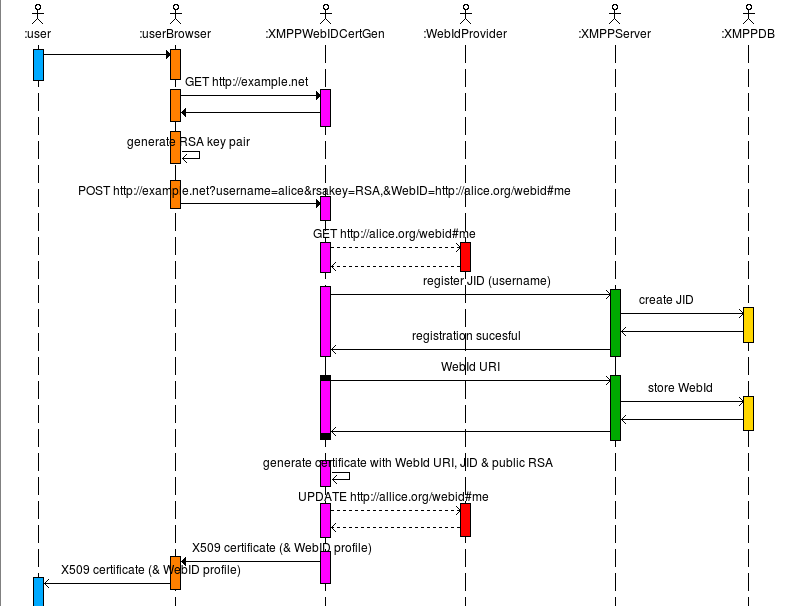
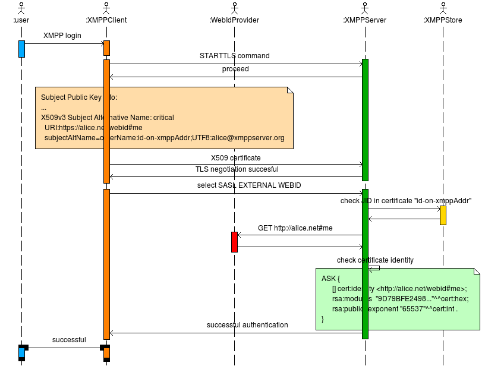

This presentation is an HTML5 website
Press → key to advance.
Having issues seeing the presentation? Read the disclaimer
Slides controls, press:
Implemented a demo web application for the registration process


Possibility to define access control to certain services if they are sucessfully evaluated against the information provided by dereferencing the WebID URI obtained during SASL-WEBID authentication.